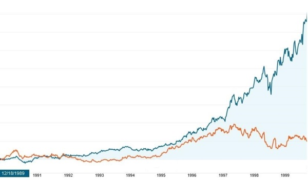

【美國】【工業】波音衰敗之源
2019-12-06 05:59:00
原文网址：https://blog.udn.com/MengyuanWang/131174635
幾個月前，我在《737Max必須重新認證》和其續文裏，對波音737Max的設計失誤和主管群的決策邏輯做了詳細的分析。重點結論之一，是波音整體企業文化已經完全腐朽，安全、效率和聲譽被抛之腦後，一切決策以短期利潤為優先，上下交相賊，所以在過去20年，波音有了一連串的醜聞，737Max只不過是最新、最大的一個。
但是波音在20世紀，曾經是美國製造業皇冠上的明珠，以優異的工程設計、生產和管理品質著稱。要改革惡劣的企業文化固然曠日廢時，極爲艱巨，一個極端優秀的大型組織要徹底腐化，也不是一夕之間就能在無意中發生的。我想在這裏，簡單介紹一下波音企業文化的轉折歷史。
我以前一再提過，美國財閥是在1970年代初，開始對社會主義做出全面的反撲，反擊的層面包括學術、輿論、社會、法制、政治和經濟（參見前文《美式經濟學是騙人把戲的又一表徵》和《富豪口袋裏的國家》）。在企業組織本身，也有了根本性的文化改變：從70年代以前認爲公司是社會整體的一部分，對員工、社區和國家都有責任，在80年代迅速轉變為一切為股權服務，利潤至上、貪婪是美德（Greed Is Good）。這個新的經營哲學受到高層經理的普遍擁戴，因爲它特別方便他們集中權力並圖利自身，結果是過去40年來大部分美國企業的總裁薪資相對於基層的比例，提升了大約兩個數量級。
如果行業是製造技術層次較低的消費者商品，這個轉變尤其容易，最有名的例子是GM，有興趣的讀者可以參考1989年的記錄片《Roger & Me》。高階製造業的基層則是數以萬計教育程度很高的工程師，要架空他們在企業裏的集體專業權威，就困難多了，最早成功的是GE的Jack Welch。
Welch自己是化工博士出身，但是他成功的秘訣在於高壓統治，一切以市場份額和利潤高低為價值標準。這樣的策略，在初期可以有真正的效率改進，但是不久就會撞上市場容納量和企業合理成本的客觀極限，繼續壓迫員工，反而會有犧牲品質信譽來揠苗助長的惡果。不過Welch運氣很好，1981年上任，整個80年代他引領風潮，到了90年代低垂的果實都摘光了，剛好冷戰結束，美國在國際上獲得極大的勝利者紅利，GE的基建生意也隨之水漲船高，營業額仍然持續上升。
但是製造業先天利潤有限，Welch爲了維持利潤的無限增長，實際上依靠的是GE Capital這個影子銀行。他在2001年退休時，還沒有人明白其究竟，輿論界賦予他響亮的經營大師聲名，正如同Greenspan被稱爲貨幣管理的Maestro一樣。一直到2008年美國金融泡沫爆破，GE Capital的爛賬才部分被公開，原來它玩的是典型的會計游戲，早年先報獲利，但實際有好幾倍的虧空深埋在賬簿裏。至今十幾年，後續的經營團隊不斷設法認賠報銷，結果仍然每隔一段時間就新爆出百億美元級別的負債（Liability），過去這一年更有人揭發GE的退休基金有300億美元的空缺，以致GE的股價基本回到了30年前的水平。

但是在1990年代中期（上圖是GE和波音在90年代的股價漲跌對比，藍色曲綫是GE，橙色是波音），GE是所有美國大型企業的榜樣，波音的董事會和管理階層也躍躍欲試，想要照搬GE那一套壓迫員工、不擇手段來削減成本並提高銷售額的辦法，其中最積極的Welch信徒，是Philip Condit。
如同Welch，Condit也是工程師出身，但是他原本只有碩士學位，所以在波音公司做到中級經理之後，又到MIT去拿了一個MBA。其後他在工程、營銷兩方面都吃得開，建立了極爲完整的企業資歷，步步爬升，1992年接任總經理兼董事，1996年升任總裁，1997年出任董事長。
這時他已經在波音玩商學院那一套有五年了，但是手下的4萬名工程師們仍然不合作，老是把“安全第一”挂在嘴上，抵制他要削減成本、趕工出貨的努力。他深感大企業的封閉性文化積重難返，決定要大破大立，只能引入外援，於是主導了與麥道合并一案。
對隨意的觀察者（Casual Observer）來説，波音的技術強、聲譽好、生意穩定，買下麥道這個不成功的對手，純屬典型的弱肉强食，在商業上主要是消弭競爭、强化自身在市場的長期地位，是很常見的操作。但是注意細節的人，應該會覺得很奇怪，因爲名義上是波音購并麥道，實際上所有的重要主管，除了Condit本人之外，都來自後者，連商標都換成麥道的。
麥道的文化，就是營銷至上；波音人說“安全第一”，麥道人的口頭禪卻是“A passion for affordability”。麥道的原總裁Harry Stonecipher接任波音的總經理，全力幫助Condit扭轉波音的企業文化；他如此評論波音工程師：“I don’t give ’em hell; I just tell the truth and they think it’s hell”。但是只要波音的總部仍然設在西雅圖，擔心安全性的工程人員總是有辦法把問題向上反映到決策階層，那麽主管既然無法在事後否認知情，爲了避免法律責任，自然就沒有利潤最大化的自由。於是經過四年的討論，Condit和Stonecipher在2001年下定決心，把企業總部搬到芝加哥。如此一來，工程團隊和企業管理階層之間有了實實在在1500英里的鴻溝，有關製造飛機的實際議題，終於可以被局限在西雅圖，不再對企業決策造成困擾。事後一名波音工程師描述對上溝通的過程：“calling a manager 1,500 miles away who you know has a reputation for wanting to take your pension away”。
到了2004年，波音的首席財務官Michael Sears在國防部采購新加油機一案中，賄賂空軍職員的醜聞爆發，連累了Condit也引咎辭職，由Stonecipher接任總裁兼董事長，他隨即宣稱，“When people say I changed the culture of Boeing, that was the intent, so that it’s run like a business rather than a great engineering firm”。話説回來，Sears原本是麥道的首席財務官，所以熱衷於不入流的行賄花樣，其實正確的辦法是收買國會議員來對國防部施壓，不但完全合法，而且更有效得多。在2011年國防部重新招標的過程中，波音就學乖了（可能是來自GE的智慧，見下文），成功地逆轉獲勝。
Stonecipher任命的新機型總監，不再是工程師出身，而是清一色的MBA。雖然在2005年，他就因爲和手下女性員工發生婚外情而被迫辭職，但是繼任的James McNerney來自GE，正是Welch當年的得意副手之一，自然蕭規曹隨，繼續弱化工程部門的話語權。McNerney在2015年退休，由Dennis Muilenburg接任。Muilenburg雖然有工程背景，卻是因爲全心全意支持Condit改革而被特別選拔出來的年輕管理人才，所以也繼續依賴新來的MBA和麥道主管來管理老波音人。根據吹哨人John Barnett的意見（參見https://boingboing.net/2019/12/02/razor-sharp-metal-shavings.html），波音在南卡負責製造787的工廠會成爲安全方面的大災難，就始於派任原本任職在麥道聖路易厰的經理來掌管，假造安全記錄隨即成爲日常。
在2016年，波音因爲787以及737 Max的熱銷，再加上亞洲民航業被預期會長期高度成長，股價暴漲了一倍多（參見下圖），即使在這兩種熱門機型都一再爆出醜聞之後，仍然居高不下。Condit、Stonecipher、McNerney和Muilenburg的年薪在3000萬美金左右，但是真正的主要收入在於股票期權，所以他們早已都是億萬富翁（Billionaire）了。不過當一個制度鼓勵並大幅獎賞這樣的行爲模式，我們必須反思它是否有資格自稱為歷史的終結。

【後註一】今天（2020年一月3日）看到這篇文章：https://qz.com/1776080/how-the-mcdonnell-douglas-boeing-merger-led-to-the-737-max-crisis/，其内容基本印證了正文中的討論。對波音有興趣的讀者，可以去閲讀更多的細節。
【後註二】2020年四月10日，NASA解密了2008年、2014年到2019年載人航空計劃的包商選擇報告：https://www.docdroid.net/EvbakaZ/glssssredacted-version-pdf，從2014年對波音推崇備至到2019年一無是處，對比極爲鮮明。
【後註三】2020年五月1日，NASA公佈了登月著陸器的承包商競爭結果：三家初創企業中選，波音落選了（參見https://seekingalpha.com/news/3567472-another-blow-to-boeings-space-wing）。
【後註四】2020年五月19日，NASA負責載人航天的主管Doug Loverro忽然宣佈辭職，理由是今年他犯了“錯誤”（參見https://arstechnica.com/science/2020/05/heres-why-nasas-chief-of-human-spaceflight-resigned-and-why-it-matters/）。鏈接的新聞作者猜測他是因爲為波音和2024年登月站隊而被整肅，如果真是如此，那麽NASA必須有更高級的官員敢於衝撞波音。
【後註五】2020年六月21日，NASA證實（參見https://www.theguardian.com/science/2020/jun/21/nasa-doug-loverro-executive-resignation-boeing）Loverro的確是因爲私下送資訊給波音而被解職的。這類似十幾年前空軍加油機競標期間的一個案例。
【後註六】波音在兩年多前事發之後，立刻雇用全球所有法律事務所中的營收冠軍Kirkland & Ellis，負責解決法律問題。K&E的第一個步驟，就是要在全國93個聯邦檢查官轄區中，挑出一個理想的法庭來。爲什麽在美國，有錢的刑事罪犯可以選擇法庭呢？這是因爲聯邦體制是93個地區檢察官（US District Attorney）各自爲政，任何案件只要司法部長不反對，都是隨便哪一個先到先得，完全不須要和罪行、被害者或被告有任何地域上的關聯，所以幾十年下來，自然有最“高級”的律師事務所未雨綢繆，通過社交管道（亦即下面會介紹的Federalist Society）與其中若干法庭形成默契，遇到有足夠油水的案子，就可以啓動預定的方案。
經過一段時間的討價還價之後，最終由北得州轄區得標。這裏的法官是Reed OConnor，聯邦檢察官則是Erin Nealy Cox。兩人都是Federalist Society（1982年成立於耶魯法學院，專門為對抗公權力、保護財團金主而設立的律師聯盟）的會員；前者由小布希任命，後者則在2017年才剛由Trump提名。他們的工作效率極高，幾個月就調查終結，斷定波音沒有任何主管涉及刑事犯行，而且不需要任何監管或内部改革。奇妙的是，司法部在2021年一月7日宣佈起訴波音，然後在一天之後的一月8日（亦即Trump任期結束的12天前，國會動亂之後兩天，全國的注意力都在別處的完美時機）宣佈無罪和解，同一天Cox辭職。
到了2021年六月，出現了一條很小的新聞（參見《Kirkland & Ellis Adds Former Dallas U.S. Attorney Erin Nealy Cox》；奇怪的是，雖然登在《Bloomberg》和《Reuters》這些主流媒體，那些記者和編輯卻全都對其中非常明顯的貓膩視而不見），報導K&E很榮幸地獲得了一位新的合夥人，而這位“prominent lawyer”兼“cybersecurity expert”正是Erin Nealy Cox。從七月開始，一個小網站《Corporate Crime Reporter》反復地試圖揭發這件事（參見《Manslaughter for You and Me But Not for Boeing or Boeing Executives》），但美國傳媒界始終波瀾不驚。我一直到今天（2021年十月9日）才偶然撞上這個現代美國的奇觀，在此和讀者分享，大家可以將其與孟晚舟案做對比，並且參考今年稍早我在留言欄所討論的，美國70、80年代後的司法體系權力急速擴張，反映了體制圖利金主的墮落。
【後註七，2021/12/20】我在2021年十月9日的【後註六】之中，解釋了波音如何買通北得州聯邦司法區法官和檢查官，在今年一月6日國會暴動之後，快馬加鞭，7日對波音造成737Max兩次墜機提起公訴，8日完成和解，確認波音公司本身和所有經理人員都沒有任何刑事過失，然後檢察官Erin Cox在當天辭職，到六月才又付出水面出任波音辯護律師所的高薪職位。原本我以爲這齣鬧劇已經告終，但當代美國的政治現實，硬是比肥皂劇還要離譜，居然又歹戯拖棚到現在。
Erin Cox離職之後，由副手Prerak Shah代理，然而他在九月底也離職加入律師事務所，於是在十月2日改由Chad Meacham接任。不同於Shah是在2020年七月才從Washington DC轉任Dallas，Meacham的整個職業生涯一直在北得州聯邦檢查署任職，和Erin Cox以及波音案的法官Reed OConnor都是同一個班底的老熟人。
Meacham上任不到兩周，就在十月14日以詐欺罪正式起訴Mark Forkner。Forkner是何人呢？他曾是737Max的首席試飛員，因爲在電郵裏坦承受上級誤導而“無意中對監管單位撒謊”“I basically lied to regulators unknowingly.”，曾被美國媒體當作醜聞的焦點來報導；他隨即在2020年辭職離開波音。Forkner成爲整個737Max事件中唯一被起訴的波音雇員，其實是一大反諷；唯一合理的解釋是，正因爲他只是一隻小卒，而波音又怕買通法庭拿到的免罪和解在公關上不好看，所以選擇他來當替罪羔羊。
進行到這裏，劇情還算在一般看客的想象力之内，然而接下來的轉折別説是史無前例，我想任何一個觀衆都不可能事先預期。十月26日，FAA忽然主動要求和北得州檢察官會面，在會議中，FAA提供的Powerpoint presentation不但堂而皇之地加上官方標簽，而且所用的字眼沒有一絲含蓄：起訴書是“incorrect and misguided”、“contains many errors in fact”，Forkner是“scapegoat”、“should not be charged.”（參見《FAA makes unusual assertion in Boeing 737 Max crashes, calling ex-pilot Mark Forkner ‘a scapegoat’》）。FAA的邏輯如下：即使忽略Forkner本身也是波音騙局的受害人，他對FAA所做的誤導敘事，純粹專注於是否須要强制要求飛行員接受額外的訓練；FAA認爲這是非常次要的議題，並不足以扭轉兩次墜機事故，真正的問題在於737Max的軟硬件設計，而試飛員和機體設計的審查一點關係都沒有。
大家可以想象北得州檢察官的尷尬；他又拖了一個多月，才迫於訴訟規則不得不通知辯護律師，後者立刻召開記者會公開此事。我覺得FAA因爲理工專業性強，腐化的程度沒有司法部嚴重，在737Max醜聞爆發之後，專業主管充分感受整個組織名譽掃地的危機，暗通波音的助理局長被先架空後送走，然後監管人員努力自清，所以波音在過去兩年不只是737Max，連787和777X都有成打的問題不斷被公開。然而在美國社會全面腐朽的大潮流下，FAA的覺醒能有多長的持久性是誰也無法保證的。
【後註八，2022/06/06】剛剛注意到上周有一本新書出版（參見《The Man Who Broke Capitalism: How Jack Welch Gutted the Heartland and Crushed the Soul of Corporate America—and How to Undo His Legacy》），將波音衰敗的遠因溯源到Jack Welch在GE所開創的短綫金融會計操作模式，成爲美國知識界的新熱門話題。其實這正是博客三年前一系列相關文章所討論的主旨，其後使得中文輿論早於英美公衆接受了這個認知，對未來經濟發展和企業管理應該會有正面的影響，是又一件對國家社會做出的可見貢獻，很令我欣慰。
【後註九，2024/01/26】四年多前737MAX剛開始出事的時候，連《觀察者網》這樣的偏紅媒體都還滿滿地是“波音的技術信譽很好”之類的過期印象，其他華語論壇就更不用提了；因此我不得不親自下場，針對737MAX的設計失誤和波音的文化腐朽一連寫了五篇文章從深層做出完整解釋，其後雖然一開始還有抵抗聲浪（例如“晨楓”不願接受我對737MAX俯仰不穩定性來源的物理解釋），但一年之内經過許多手的指數式轉載，正確的認知成爲中文世界的常識，所有的主流評論都上了正軌。這是又一次博客作爲華語界公共認知原始來源的案例；如同其他由博客傳播出去的真相，一旦成爲常識被廣汎接受，我就不必再浪費時間對著唱詩班説教（Preach to the choir），所以即使因爲波音的文化腐朽深入臟腑骨髓，後續設計和製造的問題不斷被曝光，只要其他媒體解釋得大差不差，也就沒有必要在此重複討論。
十幾天前Alaska Airlines的MAX9安全門塞Emergency Exit Door Plug在飛行中脫落，直接原因是波音的出廠前品管沒有確認螺栓正當鎖緊，這些淺層的表象已經被中文主流媒體反復討論過了，不再贅述。不過我還沒有看到關於幕後流程的完整脈絡解釋，所以在此綜合英文媒體報導和自己對波音歷史的瞭解補充一下：當年來自麥道的GE校友主掌波音之後，推行操弄會計報表、股價至上的管理哲學，於是自然也采納了美系商學院教程中的一個常用手段，亦即將營業環節中資本投入（Capital Investment）大、獲利比率（Return on Equity）低的部分分包切割出去（MBA教程中的典型成功案例是可口可樂只賣濃縮糖漿，灌水分銷的生意則切割獨立出去；但可口可樂本質上是一個廣告營銷公司，其商業模式推廣到實體產業，尤其是人命關天的高科技產業，出問題實屬必然），以便推高資本投資報酬率，從而在股市獲得更高的定價。對波音這種民航機製造廠商來説，核心運作環節中機器和人工耗費最大的就是生產機身了，不過這與整體成品關聯太多太密切，對民航機這類首重品管的行業來説實在不應該切割，然而波音高管依舊不在乎，於2005年硬是把位於Wichita，Kansas的機身生產部門獨立上市，成爲Spirit AeroSystems，但雖然財務報表上獨立了，實際運行上依舊是波音的一個部門，機身運到波音廠房之後，組裝過程仍然需要Spirit的參與。
19年下來，被人爲切割成兩家上市公司共管的同一條生產綫流程，無可避免地出現了裂痕。這裏Spirit沿用了既有的業務流程管理軟件（Business Process Managemeng Software），而波音卻升級換代，兩者之間難免會有資料庫參數定義的不完全匹配，本次安全門塞的螺栓問題便源於此。那架Alaska訂購的MAX9安全門塞所用的橡皮軟墊（有另一個版本說是門框部件，但不論如何，必須拆卸門塞）在波音廠房裏被檢查出有缺陷，這屬於Spirit的責任，於是後者員工拆卸安全門來更換軟墊。這個步驟在Spirit的軟件中只叫做“Open”，針對門塞的時候廣義地包含了拆卸重裝，原本應該觸發重新品檢；不幸的是，資料被傳遞給波音，後者的軟件卻將其當作普通安全門處理，於是區分“Open”和“Reinstall”，只在“Reinstall”才會重新檢查（普通安全門的開関當然是不會影響螺栓的）。
總而言之，工程上的細節其實只是表象，這次問題的根源依舊來自波音主管迷信美式商學院理論、濫用金融操弄手段的惡果。從現任總裁將總部移出芝加哥，卻不返回西雅圖，而是更進一步轉進到華盛頓市郊的Virginia以方便游説國會來看，波音的前途必然是越加坎坷，長期持續衰弱無可避免。
【後註十，2024/03/04】我在【後註九】中解釋，波音737 Max安全門塞在飛行中脫落的事故，追根究底源自2005年爲了美化財務報表而强行拆分產品製程為兩個獨立的公司，導致同一條生產綫有兩套互不相容的管理系統，使品管的難度無限上升；這在民航客機這類必須保障極高安全性的產業裏，是絕對不應容許的錯誤。果然經過一個多月的沉澱，波音内部也達成同樣的結論，理解到若要根治問題，就必須重新吸收整合Spirit AeroSystems，參見《Boeing in Talks to Buy Troubled Supplier Spirit AeroSystems》。然而這個企業經營策略的反轉是否能成功解決波音的品管問題，在整個美國政商體系已經被MBA思想徹底腐化的背景下，仍屬未定之天。
【後註十一，2024/03/08】根據參議院聽證會揭露（參見《NTSB rips Boeing for failing to produce key door plug documents》），波音在NTSB對安全門塞飛行脫落事故的調查中，采取完全抗拒姿態，拒絕交出關鍵文件，包括維修人員的名單，所以NTSB自然也就無法正式確認事故起源的細節。這在【後註六】和【後註七】之後，再次印證了美國式“法治”只是用來遮掩資本統治事實的烟幕。
【後註十二，2024/03/12】對波音文化腐朽的最知名批評者兼吹哨人John Barnett剛剛被發現死於槍殺（參見《Boeing whistleblower found dead of apparent suicide》），警方裁定為自殺身亡。雖然中文網絡上流行美國吹哨人“背後中八槍自殺而亡”的段子，但在現實裏這只限政界和情報界（CIA雇員或前雇員特別危險，參見前文《从1999年南斯拉夫战争到巨浪二型弹道飞弹》），並沒有企業雇傭殺手的明確案例。尤其考慮Barnett自2017年退休之後，揭發波音内部醜態不遺餘力，起初幾乎無人相信，經過737 Max兩次墜機，到最近安全門塞脫落，波音的問題基本成爲全民共識，他7年的努力大功告成，已經沒有滅口的必要，反而他本人作爲一個真正深愛波音、將全部職業生涯獻給公司的理想主義者，在從失望到絕望再到自身努力已經完結等等一系列轉折之後，的確會有很强的自殺傾向。
【後註十三，2024/05/20】在幾個月前737 Max安全門塞因安裝不當而在空中脫落之後，美國國會進行了多次的聽證會，輪番高調謾駡羞辱波音以嘩衆取寵，然而到了真正制定航空管理法案的時候，卻什麽實際舉措都沒有，唯一新穎的内涵是禁止網民追蹤富豪和財團的私人飛機（參見《Congress Has Made Fully Obscuring Aircraft Ownership Information A Reality》）。這又一次印證了博客多年來反復解釋的事實（參考博文《社會主義國家應該如何管理資本》，以及2014年Princeton的著名研究《Testing Theories of American Politics: Elites, Interest Groups, and Average Citizens》）：亦即昂撒民選體制的本質，是為資本特權階級服務，所謂的“民主”只是哄騙群衆的謊言。在能夠對世界做全面搜刮的時代，選民還能分一杯羹；中國崛起所代表的威脅，正在於擠壓殖民帝國對外搜刮的效率和空間，間接暴露了以往可以輕鬆掩蓋的諸般體制缺陷。
【後註十四，2024/08/01】波音剛剛宣佈新CEO人選（參見《Boeing names new CEO after losses more than triple》），代表著悔改並逆轉當年拆分Spirits AeroSystems的決定（參見【後註九】和【後註十】）之後，要進一步清洗公司高層，回歸工程師治理的正途，甚至有傳言新CEO已在考慮將總部遷回西雅圖。然而我們只要和Intel做比較，就可以簡單預測，這一切已經是Too little，too late：畢竟波音的文化腐朽始自1996年Philip Condit積極引進GE Jack Welch的財務至上哲學，至今已有28年，1997年并購麥道更是一次性將管理層全面換血，而Intel是2005年才落到Paul Otellin手中，開始推進MBA治理模式，到2021年就知道反悔，換囘工程主管Patrick Gelsinger當CEO，被毒害過程只有16年。然而三年過去，Intel依舊積重難返，不但在性價比上競爭不過友商AMD，連基本的生產品質都無法保證，以致發生了13代/14代CPU因“製程缺陷”而集體故障報銷事件（參見《There is no fix for Intel’s crashing 13th and 14th Gen CPUs — any damage is permanent》；這條分析《Scumbag Intel: Shady Practices, Terrible Responses, & Failure to Act》則總結了Intel在過去兩年推諉卸責的過程，與波音在737Max事件的表現如出一轍，差別只在於其產品出問題並不直接要人命；有匿名的Intel工程師指控，這些新問題的根源，在於中層管理人員集體抵制破壞Gelsinger的改革意圖），波音的腐化遠遠更爲徹底，救贖自然也更加困難。
【後註十五，2024/08/31】過去五年，波音各式各樣的飛機品管問題層出不窮，大衆都開始習以爲常、波瀾不驚。然而我剛剛看到這則新聞（參見《4th Boeing 777X Test Plane Inspection Finds Cracked Thrust Link》），覺得此事的嚴重性被大衆媒體有所低估，所以在此提醒讀者注意。
問題出在正在進行量產前認證試飛過程的777X上的Thrust Link，也就是將引擎推力傳送給機翼的主承力杆，這當然是非常關鍵的結構件。本月19日，波音宣佈在已經建好的四架777X原型機中的一架上發現Thrust Link有裂縫，隨後其他幾架也陸續證實有同樣的毛病，前面鏈接的那則新聞報導了第四架，也就是最後一架，而且是飛行時數最少的一架，所以這明顯是很根本的設計/製程問題了。777X是有史以來最大的雙發客機，專門與其配套的GE 9X引擎也是人類建造過的最大噴氣引擎，直徑超過4米，全重近十噸，推力高達50噸。Thrust Link負責傳輸這樣史無前例級別的推力，當然對冶金鍛造有著嚴厲的要求和考驗，美國的實體工業能力似乎已經有所不足，至少無法輕鬆滿足這個要求。
這裏雪上加霜的是波音的財務狀況。737MAX已經彌留，787是唯一的現金來源，但維持穩定盈利尚且不夠，更不用提波音新CEO試圖改革自救必然需要的大筆Capital Investment（會計用語，指對機械廠房等固定資產的投資），所以波音原本指望777X趕緊通過FAA的認證，然後明年開始交付。我高度懷疑這個Thrust Link的製程缺陷能在一兩年内徹底解決，那麽要麽一直拖下去，波音的財務窟窿越捅越大，要麽再次逼迫FAA高擡貴手，容許波音帶病交機。原本777X應該在2020年就交付客戶，現在已經拖了至少五年，波音公司又元氣大傷，不論怎麽選擇都不是好事。
【後註十六，2024/10/05】我五年前解釋波音的徹底腐朽時，頗駭人聽聞，其後各種問題層出不窮，至今新醜聞太多、太頻繁，早已不值得條條討論。然而最近又出現了一個相當嚴重的品管疏失，卻有著介紹給讀者的價值。
引發注意的事故發生在今年二月6日，一架隸屬聯合航空的波音737 Max在紐約周邊的Newark機場著陸過程中，控制左右方向的踏板鎖死，以致偏離中綫、即將衝出跑道，所幸機長及時動用原本是停機坪專用的低速轉向鈕，保全了飛機的安全和乘客的生命。事後NTSB（國家運輸安全委員會，專職調查運輸安全事故）很快查明真相，並發表初步報告（參見《Boeing 737-8 Rudder System Anomaly》），但不出意料地，FAA和波音都無動於衷、多方推諉、無限扯皮，導致NTSB不得不在本周公開高調地指責這兩者草菅人命、危害公共安全；他們如何扯皮的詳情請讀者自行參考《NTSB slams FAA, Boeing on possible rudder failure. Here’s how the faulty parts ended up on planes》，我在此只列舉與事故直接相關的幾件已知事實：
1）出問題的是一件垂直尾舵伺服器（rudder SVO-730 rollout guidance servo），受高空低溫影響而凍結失效。
2）SVO-730是一個備選的額外部件，聯合航空並沒有選購，公司的所有飛行員也對其毫無所知，之所以被安裝在交給聯合的737 Max之上，是因爲前幾年737 Max停飛，原買主退出契約，波音就將其原樣轉發給聯合航空，只修改軟件遮掩其存在，並未提供專門的文件和培訓。
3）NTSB認爲SVO-730的品質問題不在於設計，而來自早在2017年的生產製程錯誤，其後共有353個缺失部件交付客戶。Max的尾舵完全沿用上一代737NG的版本，這些問題伺服器也就同時出現在NG和Max上，大部分被賣到海外，然而FAA拒絕發佈停飛檢查令，所以目前未知是哪些航空公司受害。
4）SVO-730的供應商是Collins Aerospace，而波音的新任CEO Kelly Ortberg恰好在2013-2021年間擔任Collins的CEO。
【後註十七，2024/10/12】一個半月前，我在【後註十五】根據波音777X有關鍵部件出現嚴重缺失，預測777X的交機很可能被迫大幅延後，並從而對波音的財務雪上加霜。昨天消息傳來（典型的報導參見這篇《Financial Times》的文章《Boeing to cut 17,000 jobs and delay 777X jet as revenues fall short》；我看到唯一做出正確分析的，是《Barron’s》的這篇《Boeing Is Laying Off 17,000 Workers. It Isn’t About the Strike.》），果然777X的預期交機時間從明年春延到後年秋冬，而且波音將裁員10%。許多媒體人將這兩個決定歸罪於罷工，這是顛倒邏輯因果的聯想式感性思維：罷工才剛開始，一般預期時長數周頂多數月，波音怎麽會急著將原本即將交付的極重要新機型一次性延後一年多？這明顯是反過來利用罷工為口實，來遮掩777X技術問題的嚴重性。至於裁員，照理也應該是罷工的因，而不是反過來作爲罷工的果，否則管理層豈不是故意火上加油？所以實際上是波音新CEO上任，須要做出這些決定，就順便甩鍋給工會來遮掩真實邏輯脈絡中所包含的重大失誤，而這些失誤的邏輯後果如博客所示範、是可以提早數周事先預見的；不做獨立邏輯思考、純粹復讀利益集團的公關謊言，正是當代大衆媒體的悲哀，對國家和人類的前途有著深遠的惡劣影響。
【後註十八，2024/10/16】今天有一名Intel内部員工匿名接受自媒體采訪（參見《Intel Engineer explains BAD Arrow Lake Performance, Battlemage, AMD Zen 5 Turin》），坦誠討論該公司的衰敗過程，基本印證了博客既有的推論，其中最重要的有兩點：1）2021年上任的技術人CEO Pat Gelsinger試圖力挽狂瀾，員工的確可以看到許多改善，但積重難返，整體頹勢依舊；2）衆多難返的積重之中，中層管理（Middle Management）的抗拒、阻撓和破壞是頭號問題。畢竟之前有16年專門雇用和拔擢MBA，現在這些禍害早已全面滲透、身居要職、嘍囉環繞、權力鞏固，再好再强的CEO也不可能在短短幾年就易筋換血，財務報表依然難看的後果反而是改革者必須下臺。
【後註十九，2024/12/03】昨天消息傳來，Intel CEO Pat Gelsinger果然如兩個月前博客預測（參見【後註十八】），被迫辭職。Intel比波音的MBA化要晚些，後來前者的董事會又受後者的737Max醜聞所震撼，提早數年雇用走正確實業路綫的CEO，但人事上的腐朽太過徹底，已經來不及做出大刀闊斧的改革，於是策略上的微調自然不足以扭轉必然的失敗。中國的學術、金融和科研管理正如十幾二十年前的Intel和波音MBA經理階層，短期内能夠粉飾太平、甚至產出漂亮的報表，但長期腐蝕生產力和扭曲政策方向的最終結果，是當問題一次性爆發，就已經病入膏肓、藥石罔效，所以我一再呼籲及早改革。可惜習近平這樣有魄力的領導，卻也受幕僚眼光所限，沒有看出這個慢性病症的嚴重性，下一任只怕更加無力扭轉乾坤。
12 条留言
文章说了发展历程和原因，没有给出结论，哈哈，本文中心思想：社会的良性发展要有以民为主的政府对经济民生行业进行强力约束和监督，而美国曾经是。
有一个问题是，那么这算算艾森豪威尔所警告的军工复合体最终所造成的的影响呢？难道说美国辉煌于此然后没落于此？
我們的確生活在英美霸權夕陽西下的時代，有很多領域腐朽不堪，高能理論淪落爲一個傳銷集團其實並非獨一無二的特例。中國不止是華人未來的希望，也是全世界人類的希望，必須要對自已的理性有信心，堅持對事實和邏輯的尊重，誠實嚴謹地觀察並批判西方的制度和行爲，切忌盲目抄襲，繼承歐美文化的糟粕。
最近20-30年，很多重要的產品，包括普通民用產品和航空領域，很多技術方案最終都被以追求短期利益為目的的商業決定override。
我舉兩個例子：
1. 10多年前，我的一台Audi A4過了一定公里數以後出現一個很奇怪的故障，發動機運轉極不穩定，有時在路況較差的時候，會死火，修車技師左查右查，都找不到原因，最終拆開發動機進氣管才發現，媽的，一直是合金接頭的組件居然被換成了塑料製品，塑料製品在一定公里數以後，就會老化開裂，特別是在路況不好的情況下，裂口會急劇變化，影響進入發動機的油氣比而造成發動機極不穩定。
2. 我有一台Makita台鋸，用了若干年以後，發現一個90度轉角齒輪經常脫齒打滑，後來發現轉角齒輪根本耦合不上，扯開一看，大吃一驚，原來裡面一個偏心窩型墊圈居然是塑料製品，在使用了若干年以後，這個東西就會磨損到兩個齒輪耦合不到的程度，就必須報修。上網一查。墊圈有賣，塑料的40刀，金屬的120刀，最終勞資自己開動車床做了一個解決問題。
從以上這兩個例子可以看出，在很多產品的關鍵部位使用劣質部件，肯定不是技術方案和技術人員的決定，而是商業決定。這個商業決定的主要目的，是保證該產品在過了保修期以後，一定會出問題，讓你買新品或者是花高價錢維修。
從王兄提供的波音案例也可以看出，整個工業製品領域，一旦轉變了工業品哲學和文化，變成以追求短期商業利益為目標，特別是應用現代企業管理的董事長/總經理團隊機制（MBA所倡導的機制）以後，那麼她的產品定義就會交由商業部門來做決定，而不是技術部門，商業部門追求的是，短期的利潤/成本效益，使用安全和產品的使用壽命週期等的優先級別肯定會被調低，有時甚至會人為地設置產品故障點和壽命週期，來保證他們持續榨取未來利潤。
在這方面，整個世界，特別是歐美日的產品，由於受美國商業文化的影響深重，特別是最近20-30年來，通過美國MBA培訓出來的職業經理人走進管理最高決策階層，這方面已經積重難還。很不幸，中國也在學！
世上恐怕再也見不到德國的Schuler機床一類的百年仍然在服役的工業製品了，因為整個工業製品文化，都被美國佬利用話語權優勢給帶騙了。
我虽然认同中国企业也大量地存在这种风气，但是在国企和事业单位等存在党支部的企业中，唯利润论终究是政治不正确的，重工业高管要拿走如此天价的薪酬更是没有合法的途径。所以，我认为中国现有的体制虽然也有同样的隐患，虽然也需要中央政府长期持续地保持反制力度，但终究在大部分关键的垄断行业里是存在现成的合法的反制手段的（互联网巨头们在例外，导致的最大恶果之一应该就是莆田系医院）。而美国民众发起的占领华尔街运动，被警察驱逐之后就烟消云散，再无后续了。现在甚至没有人在讨论这个问题。
话说回来，我比较好奇美国70年代是如何培养出这些有社会责任感的企业的，不知道是来自于外部社会环境（例如公正的媒体监督），还是来自于创始企业家的责任感？
不过挺有意思的是，华为一方面以“压榨员工”出名，另一方面又是与普通员工共享“剩余价值”最彻底的企业。颇有种“到底是谁在压榨谁？”的不自洽。
“壓榨”指的是既要馬兒好，又要馬兒不吃草，因爲糧草全被將帥剋扣光了；華爲自然不能和美企相提並論。
我不想在博客上出現“粉”與“黑”之爭；就事論事就夠了。
王先生，您好。从您的文章上是否意味着这次2020的美国经济衰退极大的几率是从股市发动。现在美股的屡创新高，在于40和50年代的爱国教育和公民意识，以及不管波音还是其他的大公司的高官获利在于股票期权，为了股票升值，不是去投资提高就业而是回购。银行的流动性不足，先前您提到过是缩表和赤字。美国联邦政府的预算很大一部分，最终也会变为这些企业的利润，而投入股市。相对于印钱定向投资股市。。。
我在《八方論壇》的節目中已經評論過，這次又是一個典型的金融資產泡沫，但是比較類似於2000年那次，而不是2008年的大災難，主要的差別在於銀行業（至少是大銀行）學乖了，不但沒有加入狂歡盛宴，而且一見泡沫吹得太大，就提早收回現金入手，準備過冬。大銀行不願意繼續借錢給影子銀行，正是最近Repo Rate不斷上升的近因，遠因則是政府發債和美聯儲削減QE，使美國金融業的現金流量捉襟見肘。
美國經濟周期内的短期榮衰，有三個決定性的支柱：金融業負責放貸，企業界負責投資，消費者則必須願意花錢；這次的問題主要出在企業上。因爲美聯儲放水太多太久，利率長期低迷，美國的企業普遍發債借貸（美國的債市發達，借錢並不一定要向銀行借），或者用來購并競爭對手，或者直接回購自己的股票，這兩個行爲同樣都會人爲地把股價推高。至於企業主管爲什麽會想要人爲地推高股價，剛好就是這篇正文要論證的。
觀察現在的美國企業界，最重要的兩個指標是負債對收入的比例（Debt to Income Ratio，DTI Ratio），以及股價對收益的比例（Price to Earnings Ratio，P/E Ratio；Earnings就是Net Income，如果只説Income，通常指的是Gross Income，也就是稅前的總收入），它們都在2016年之後，突破合理的區間，直綫上升到泡沫級別。這就好像是山坡上一直下雪，雪崩是必然的，但美聯儲拼命在避免任何震動，我們也就無法預期什麽時候雪崩會真正發生。
本周的失業率數字被Trump吹噓成50年來最佳，其實美國中產階級的工作早已停滯甚至萎縮，現在增加的就業都是因應消費的低級職位。但是這仍然代表著消費堅挺，而在美國經濟中，消費向來是主導；雖然長期來看，消費者的負債率也會向泡沫級別邁進，在短期卻給了美聯儲一個喘息的空間，可以針對金融界的流動性（Liquidity）問題直接對影子銀行放水，利率反而不一定要調降了。
順便提一個題外話，“泡沫”/“Bubble”這個字是1720年南海泡沫事件（South Sea Bubble）期間被發明的，但是原本不是指整體經濟，而是針對個別公司；換句話說，它的用法原本是“Bubble Company”（“泡沫公司”）而不是“Bubble Economy”（“泡沫經濟”）。
https://www.guancha.cn/internation/2019_12_17_528630.shtml
喔噢，波音好像是扛不住了，文中引用的那一句——“我们认为，这一决定对长远维持生产系统和供应链健康的影响最小。”怎麽好像越描越黑，夜行人吹哨的樣子。
又，向王兄補充個建議，當不知道作者性別時，可用君。例如：醋醋君
我的思路還是以英文爲主，而英文裏沒有中性的第三人稱，所以也就沒有想到怎麽稱呼不確定性別的第三者。
转贴 https://www.zhihu.com/question/362853891/answer/949599543
波音很可悲，陷入了一个大公司的通病，就是让财务和销售人员来掌管公司，而不是工程人员。公司成为行业老大之后就会失去前进的方向和动力，以赚钱为目的，而不是用产品就服务社会、改变世界。销售或者财务出身的领导者确实能在短期内为公司赚到钱，并且这些领导者觉得自己不懂产品和技术，还把公司领导得挺好，就会觉得搞技术是下面人的事情，进而在自己的直接下一级中提拔不懂技术的人，下一级的人也这样想，如此反复，结果就是大家都认为自己搞好管理就行，搞技术是下级和其他人的事情。长此以往，直到有一天，一件看似偶然实则必然的事故的发生给所有人敲响了警钟，而这件事故，其实仅仅只是灾难开始的导火索而已。
很明显，波音没有从此次事故中吸取教训，新任命的领导者竟然还是个财务出身的人员。好吧，我们共同来看一幕大戏帷幕的拉开吧。
以上这种现象，乔布斯很早就阐述过，当乔布斯被赶出苹果董事会后，被财务出身的人所把持的苹果高层为了赚钱，竟然发展出了几十种产品系列，每一种是没有成为核心产品，乔布斯归来后直接砍掉了大多数的产品种类，重新聚焦核心产品和技术，实现了苹果的二次腾飞。
元旦的时候腾讯发了篇关于谷歌的新闻（“诸多老员工披露谷歌“恶变”：这家公司我们已经不认识了”，https://tech.qq.com/a/20200101/043276.htm），内容大概就是谷歌正在变得平庸，似乎正处于员工反抗公司文化巨变的阶段。
谷歌主动摘掉“不作恶”的牌坊不算新闻，但这种变化多少还是有些让人唏嘘，这么一个全球顶级又有相当影响力的科技公司从成立到现在也才22年，现在已经开始隐隐约约出现走下坡路的趋势了。现在国内舆论圈内有种声音，美国有严重问题，但硅谷还是好的，不过我不太赞同这种观点。台湾的新竹科技园区可能是台湾这个风雨飘摇的末代朝廷里少有的比较平静的地方，但是整个大环境造成的五缺问题还是会逼着台积电之类的企业外迁。同样的，硅谷公司大多属于朝阳产业，本身就比美国其他地方更有活力，硅谷对于美国衰退的有感度慢于其他地方也很正常。我觉得可以把硅谷巨头的表现看成一种非常硬的指标，等硅谷巨头们都开始普遍衰退或像台积电那样外迁的时候，美国可能就剩不下什么了。
//彭博社8月4日援引知情人士消息报道，波音公司一架737 Max飞机正飞往中国以进行飞行测试。该飞机因为坠机事故在中国已被禁飞逾两年，据称这次试飞是取消中国飞行禁令的关键步骤。//
https://finance.sina.com.cn/stock/usstock/c/2021-08-05/doc-ikqciyzk9694207.shtml
https://std.stheadline.com/realtime/article/1821361/%E5%8D%B3%E6%99%82-%E4%B8%AD%E5%9C%8B-%E6%9D%B1%E8%88%AA%E7%A9%BA%E9%9B%A3-%E5%A4%B1%E4%BA%8B%E5%AE%A2%E6%A9%9F%E9%AB%98%E7%A9%BA%E5%A4%B1%E5%8B%95%E5%8A%9B-90%E5%BA%A6%E4%BF%AF%E8%A1%9D%E5%BD%B1%E7%89%87%E6%9B%9D%E5%85%89
雖然出事的不是７３７ＭＡＸ系列，但這種插水式，和之前ＭＡＸ的兩宗空難如出一轍，靜候王兄和各位內行的高見。
在美国主动脱钩，Trump有望卷土重来的新冷战大背景下，与国产大飞机深度绑定的主力发动机供应商 CFM (GE主导下与法国Safran联营) ，在未来数十年，其保质保量的持续供应与及时高效的售后技术支持是否值得中方完全信赖，而可以高枕无虞，无惧高悬的新制裁？ 退一步说，假设美方基于各种考虑以及利益交换，最后选择高抬贵手，保证绝不断供。中方大飞机“心脏”供应问题也不算完全解决了。正如先生反复揭示的：通用电器，如同其姐妹花波音公司，因为长期被MBA短期主义快钱文化腐蚀，财务做帐一流，一线战鬥的工程师在公司却只能靠边站，其质量品控也是十分可疑的。
另外，关于GE近年的管理层的资本运作小手段：接棒 Jack Welch 的 Jeff "Second Jet" Immelt, 依旧是个只会压榨粉饰，锯箭画饼的自大吹牛狂，同样瞎搞 Après nous，le déluge。在 Immelt 吃饱喝足后，经过精彩宫鬥上台的 Larry Culp, 通过教科书般的资本运作将GE这家百年老店，拆分为 GE Vernova, GE Aerospace, GE Healthcare 三家独立公司后，市场一片叫好，股价强势反弹。见到拆分的魔力后，许多公司也跃跃欲试，比如阿里巴巴本也打算照样学样拆分来 “为股东创造价值”。请问先生，为何在华尔街眼里，管理层大肆收购兼并，做大做强，能够“为股东创造价值”，相反地，管理层瘦身拆分，变卖祖产，也能够“为股东创造价值”？ 资本运作竟然能够如此地化腐朽为神奇，是何道理？
至於商飛建造大飛機的部件供應，原本就計劃逐步用國產替代，如果美方斷供，只會有暫時的提產延遲，不會根本性地毀滅整個產業。事實上正如過去幾年半導體的經驗那樣，有了美方的制裁，反而激發中國政府的認真管理，提高發展的長期效率。
美國“Corporate Action”企業重整，合久而分、分而復合，兩個方向卻都提升股價的這個謎團，幕後有兩個因素：第一個是虛的，也就是提供公關炒作的機會，賦予韭菜們自我陶醉的藉口；另一個是真金白銀的，亦即趁機玩弄金融魔術圖利大股東，尤其在過去20年，利率因外國中央銀行儲備巨量美元而被人爲壓低，Private Equity趁勢興起，往往高杠桿借貸，從貸款方（主要是外國銀行和買債券的散戶）搶錢。